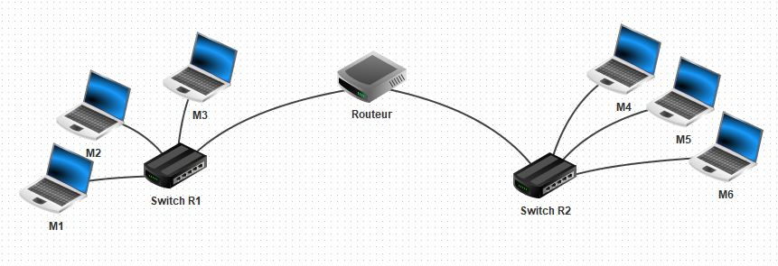

Lancer le logiciel Filius que l'on trouve dans /Appli/ et ouvrir le fichier
nommé reseau1.fls qui se trouve dans le dossier Filius donné en ressource.
L'image du réseau suivant s'affiche dans le logiciel Filius.

Nous avons ici deux sous-réseaux de trois machines reliés par un routeur.
Dans Filius, double-cliquer sur l'ordinateur
du premier sous-réseau, puis compléter la zone ci-dessous par l'adresse MAC de cet ordinateur.
Il est possible de copier l'adresse MAC avec Ctrl c puis de la coller dans la zone avec Ctrl v.
Dans Filius, double-cliquer sur l'ordinateur
du deuxième sous-réseau, puis compléter la zone ci-dessous par l'adresse MAC de cet ordinateur.
Dans Filius, cliquer sur le Routeur. On observe deux adresses IP pour ce routeur, ce qui est normal car il est relié à deux sous-réseau. En cliquant sur chacune des ces deux adresses IP vous pouvez récupérer les deux adresses MAC des deux cartes réseaux utilisées par ce routeur. Vous pouvez alors compléter les zones ci-dessous.